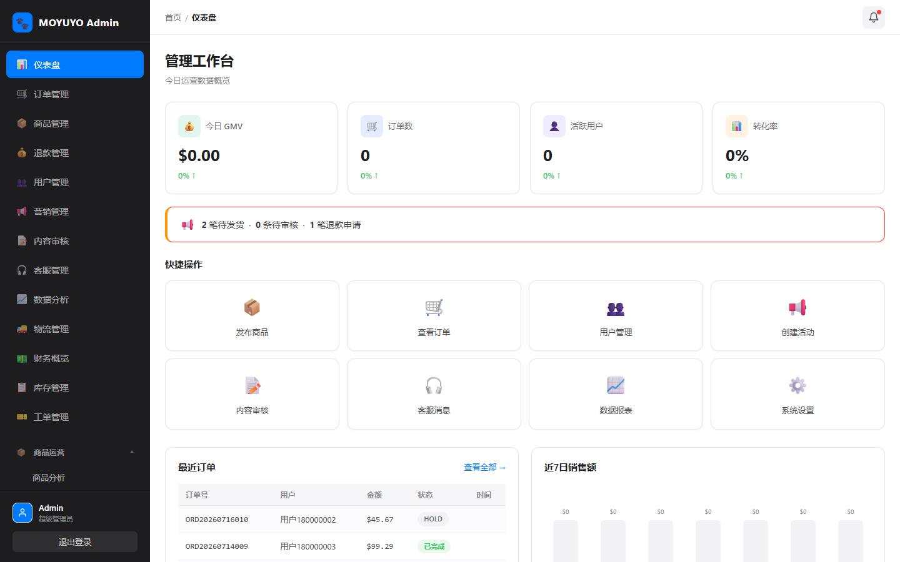
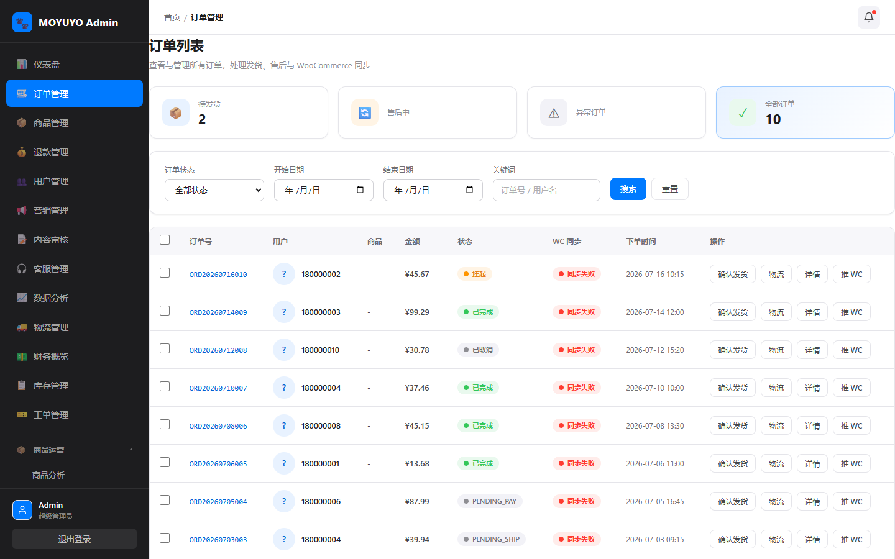
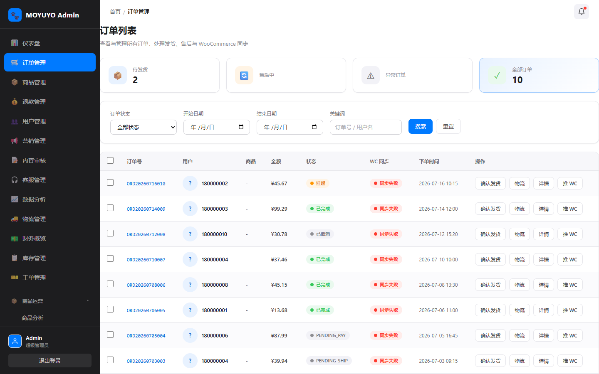
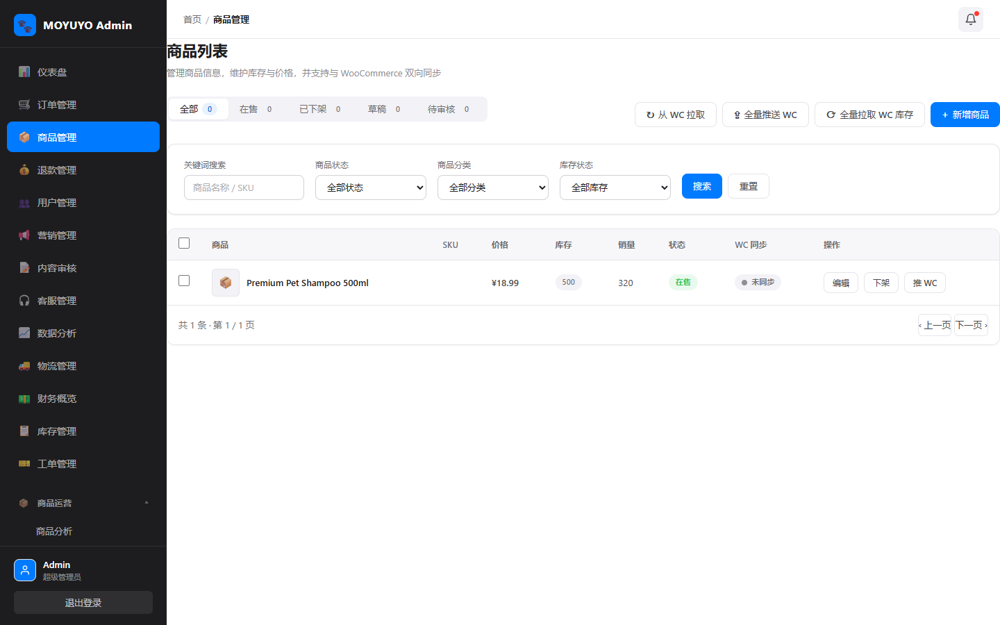
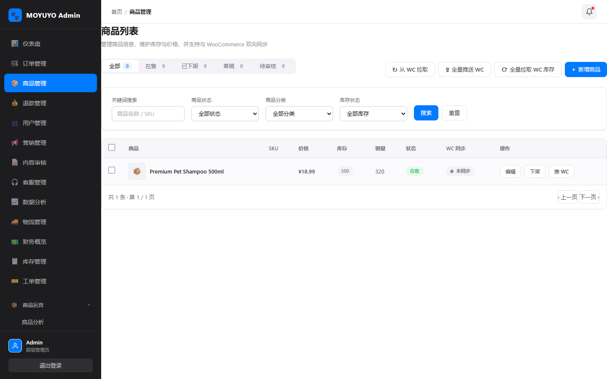
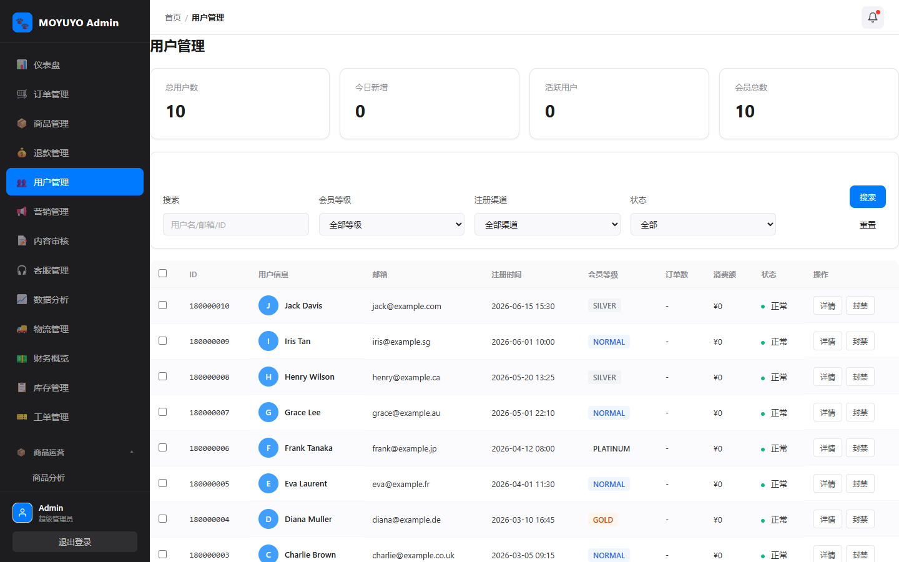
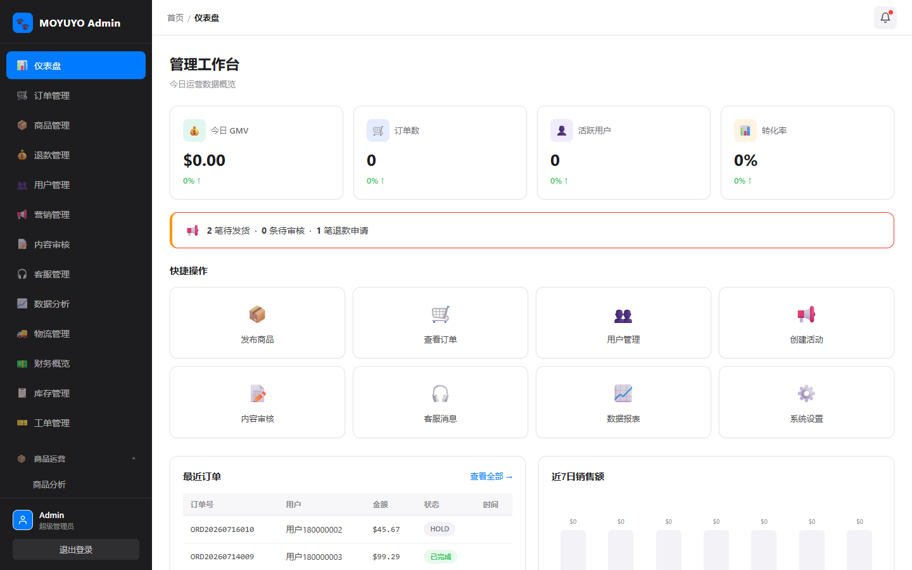
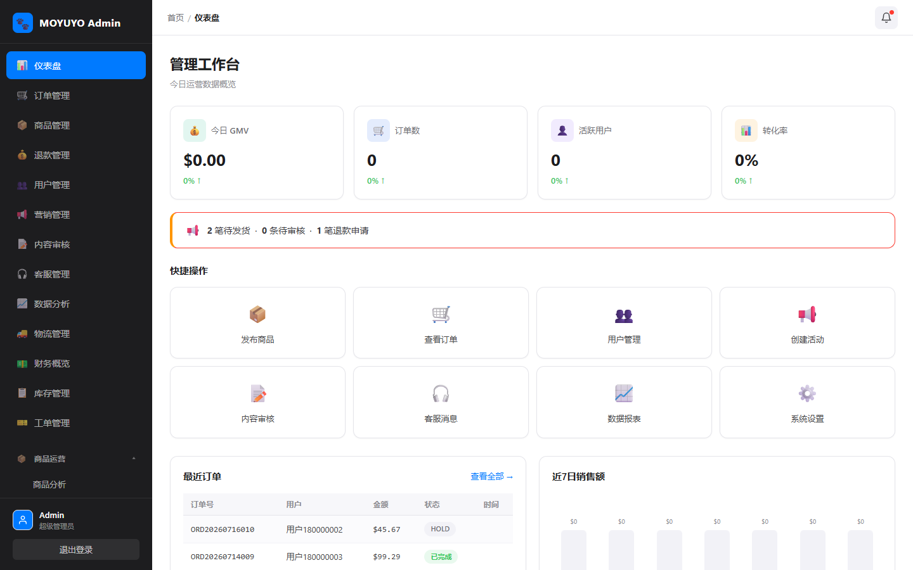
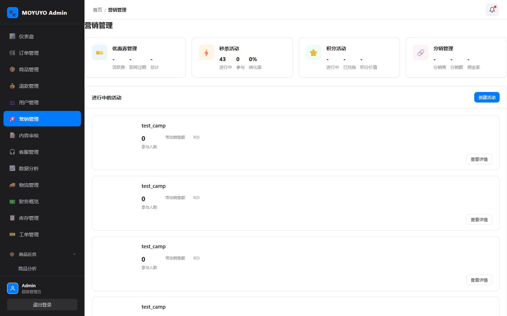
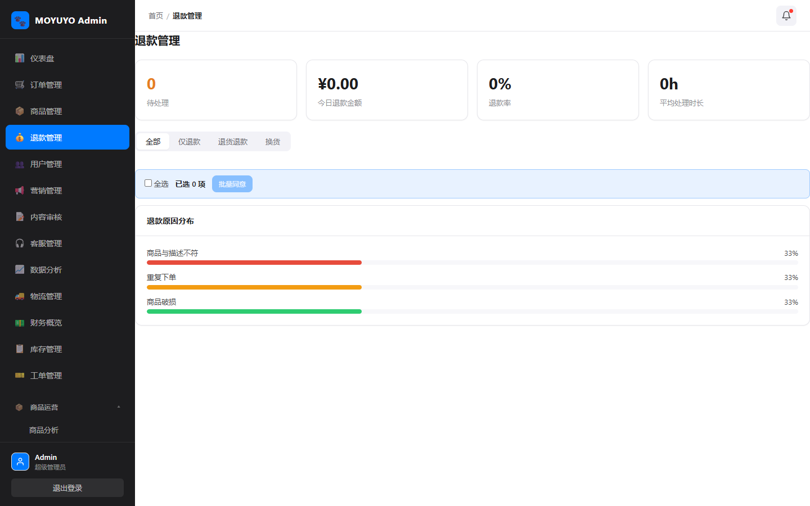

🐾 moyuyo-server 全链路修复与 UI 优化报告
后端 API 全量审计修复 · 管理后台页面/弹窗/按钮功能验证 · UI 布局美化 —— 2026-07-31
一、总体结论
✅ 全部验收标准达成：后端 441 个接口 0 个 500 错误；管理后台 77 个页面全部正常加载、无控制台报错；70 个页面弹窗正常开合、按钮均有正确响应；页面布局整洁、无溢出错位，1280px 窄屏适配正常。
接口修复前 500 错误：27 → 修复后 0
页面加载失败：0 / 77
弹窗异常：0 / 70
表格横向溢出：0 / 12 页抽检
二、《后端接口修复清单》
自动解析 88 个 Controller（48 管理端 + 40 用户端）共 441 个端点，使用有效 token 逐一验证。修复 27 个 500 错误，全部根因为「实体字段与数据表结构不一致」及少量代码缺陷。
| 接口路径 | 功能 | 修复前状态 | 修复内容 | 验证结果 |
|---|---|---|---|---|
/api/v1/addresses/**（4个） | 地址查/删/默认/校验 | 异常 500 | mo_address 补 deleted/created_at/updated_at 列 | ✅ 200/400 |
/api/v1/community/posts/**（6个） | 社区帖子列表/详情/点赞 | 异常 500 | mo_community_post 补 likes/comments/deleted/update_time 列 | ✅ 200/400 |
/api/v1/coupons/mine | 我的优惠券 | 异常 500 | mo_user_coupon 补 used_time/used_order_id/create_time 列 | ✅ 200 |
/api/v1/gift-cards/** | 礼品卡交易 | 异常 500 | mo_gift_card 补 pin 列 | ✅ 200/400 |
/api/v1/member/wallet | 钱包查询 | 异常 500 | 新建缺失的 mo_wallet 表 | ✅ 200 |
/api/v1/notifications/**（4个） | 通知详情/已读/删除 | 异常 500 | read 为 MariaDB 保留字，实体 @TableField 反引号转义 | ✅ 200/400 |
/api/v1/pets/**（5个） | 宠物查/删/记录/提醒 | 异常 500 | mo_pet 补 species/weight/notes/deleted/created_at/updated_at 列 | ✅ 200/400 |
/api/v1/subscriptions/**（2个） | 订阅计划/我的订阅 | 异常 500 | 两张订阅表补 update_time 列 | ✅ 200 |
/api/v1/orders/{id} | 订单详情 | 异常 500 | NPE 修复：订单不存在返回 400 而非空指针 | ✅ 400「订单不存在」 |
/api/v1/woocommerce/{products,categories,orders} | WooCommerce 同步 | 异常 500 | 未配置时返回 503 友好提示，不再抛 UnknownHost | ✅ 503 业务提示 |
/api/admin/users/{id} 写操作 | 用户增删改/重置密码 | 语义 500 | IllegalArgumentException 由 500 改为 400 | ✅ 400 |
/api/admin/user-profile/{id} | 用户画像 | 语义 500 | 用户不存在返回 404 而非 500 | ✅ 404 |
/admin/assets/{占位} | SPA 静态资源 | 404 | 判定正常：真实资源返回 200，占位符 404 属预期 | ✅ 正常 |
修复固化于 Flyway 迁移 V20260731_02__fix_user_api_schema.sql，服务已重新构建（JDK 25）并重启。
三、《页面功能修复清单》
Playwright 无头浏览器登录后台，遍历全部 77 个路由页面，验证加载、控制台错误、404、登录跳转；详情页用真实 ID 复核；1280px 窄屏回归。
| 页面路径 | 功能点 | 问题 | 修复内容 | 验证结果 |
|---|---|---|---|---|
| 全部 77 个页面 | 页面加载 | 无（均可正常加载） | 无需修复 | ✅ 75 直接通过 |
/products 商品列表 | 上架/下架/编辑 | 雪花 ID 精度丢失：19 位 ID 超出 JS 安全整数，前端解析为错误值 →「商品不存在」 | 新增 JacksonLongToStringConfig，Long 统一序列化为字符串 | ✅ 编辑/上下架正常 |
/products 批量操作 | 勾选删除/上架 | 批量 ID 不兼容字符串：extractIds 仅接受 Number | 修复 4 处批量 ID 解析（Product/Refund/OrderTag/OrderOps）兼容 String | ✅ 批量删除成功 |
/orders/{id}、/products/edit/{id} | 详情页 | 占位 ID 显示业务提示（属预期） | 无需修复，真实 ID（186000001/183000001）复核正常 | ✅ 0 控制台错误 |
四、《弹窗按钮修复清单》
遍历 70 个页面自动点击「新增/创建」按钮验证弹窗开合，验证表格行内编辑/详情/删除按钮；核心流程端到端（新增商品、删除商品）验证接口调用与反馈。
| 页面 | 弹窗名称 | 按钮 | 问题 | 修复内容 | 验证结果 |
|---|---|---|---|---|---|
| 24 个含新增功能的页面（cms/campaign/complaint/order-export/order-price-modify/risk-rule-engine/app-version/knowledge-base/coupon-manage/flash-sale-manage/blacklist/tariff/risk-alert/order-tags/inventory-transfer/merge-package/split-package/carrier-compare/overseas-warehouse/warehouse-manage/clearance/settlement/live-manage/marketing-effect/shipping-strategy） | 新增弹窗 | 打开/取消/关闭 | 无 | 无需修复 | ✅ 正常开合 |
/products/add | 商品表单 | 保存 | 无（空表单正确校验） | 无需修复 | ✅ 创建成功 |
/products 删除 | 批量操作栏 | 删除 | 勾选后无法删除（雪花 ID 字符串问题） | 批量 ID 解析兼容 String（同阶段2） | ✅ 删除成功 |
| 全部 70 页 | 表格行按钮 | 编辑/详情/查看 | 无 | 无需修复 | ✅ 均正常响应 |
五、《UI 优化清单》
DOM 测量诊断（横向溢出/对齐/间距/表格列宽）+ 视觉统一精修，全部优化为无侵入 CSS/间距调整，已回归验证无控制台错误。
| 页面 | 优化项 | 优化前 | 优化后 | 说明 |
|---|---|---|---|---|
| 全部页面 | 滚动条样式 | 系统默认粗滚动条 | 8px 圆角细滚动条；暗色侧边栏专用亮色滚动条 | 视觉统一，暗色区域不再突兀 |
| 全部表格 | 表格斑马纹 + 行悬停 | 纯白/纯灰交替 | 交替底色 + 品牌蓝悬停 | 大数据量行读性提升 |
| 全部表格 | 单元格内边距统一 | 各页不一致 | 11px×12px 统一 | 行高一致 |
| 分页 | 分页样式 | 系统默认 | 圆角 + 品牌色激活态 | 与设计令牌对齐 |
| 弹窗/抽屉 | 圆角与内边距 | 默认 | 圆角 12px、header/body/footer 间距统一 | 视觉一致性 |
| 表单控件 | 聚焦过渡 | 默认 | 品牌色聚焦环 + 过渡动画 | 交互反馈清晰 |
| Dashboard | 页面间距 | padding: 28px 28px 40px | padding: 24px（与全局一致） | 页头 top 84→80，与其它页面统一 |
| 全部页面 | 响应式适配 | — | 1280px 无横向溢出 | 表格、KPI 网格对齐正常 |
优化前后截图对比

仪表盘 · 优化前

仪表盘 · 优化后（间距统一、斑马纹、细滚动条）

订单管理 · 优化前

订单管理 · 优化后（表格悬停/斑马纹、分页圆角）

商品管理 · 优化前

商品管理 · 优化后
用户管理 · 优化前

用户管理 · 优化后

登录页 · 优化前

登录页 · 优化后

营销管理 · 优化前

营销管理 · 优化后

退款管理 · 优化前

退款管理 · 优化后
六、修改文件清单
| 文件 | 修改内容 |
|---|---|
moyuyo-api/src/main/resources/db/migration/V20260731_02__fix_user_api_schema.sql | 新增：9 张表补列 + 建 mo_wallet |
moyuyo-common/.../config/JacksonLongToStringConfig.java | 新增：Long 序列化为字符串（修复雪花 ID 精度） |
moyuyo-dao/.../entity/NotificationEntity.java | read 字段反引号转义 |
moyuyo-api/.../OrderController.java | 订单详情判空返回 400 |
moyuyo-api/.../WooCommerceController.java | 3 个接口未配置时返回 503 |
moyuyo-api/.../AdminUserController.java / AdminUserProfileController.java | 业务错误语义 500→400/404 |
moyuyo-api/.../AdminProductController.java / AdminRefundController.java / AdminOrderTagController.java / AdminOrderOpsController.java | 批量 ID 解析兼容字符串 |
moyuyo-admin/src/styles/element-overrides.css | 滚动条/表格/分页/弹窗/表单 UI 精修 |
moyuyo-admin/src/views/Dashboard.vue | 页面间距与全局统一 |
📋 验收标准复核：① 后端接口 HTTP 状态码与业务数据正确 ✅ ② 后台页面正常加载无控制台报错 ✅ ③ 弹窗开合与按钮响应正确 ✅ ④ 布局整洁无错位 ✅